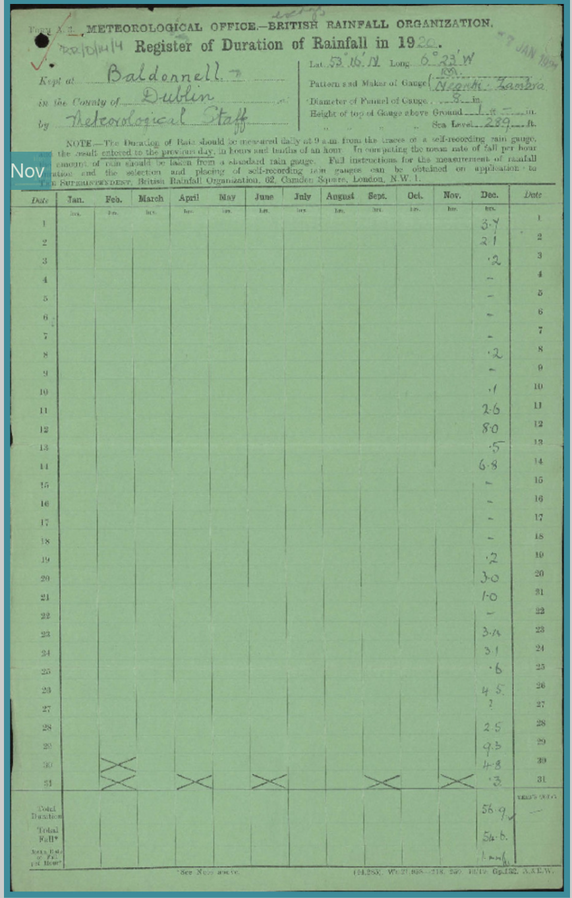
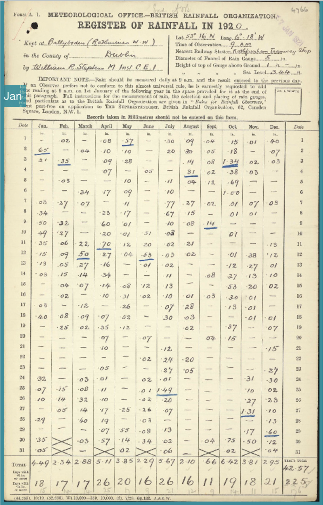

Anqi Wei 125101394
DH6034: Humanities and New Technologies: Tools and Methodologies
Lecturer: Dr. Shawn Day
Last Updated: 2026-04-23
Individual Data Analysis “Exploring How Social Media Shapes My Daily Behaviour” (January 18 – April 10, 2026)
Introduction
In today’s digital era of information explosion, the smartphone has already become an important part of our daily lives. For many people, a smartphone is not a communication tool; it has gradually occupied a lot of people’s time and attention. Nowadays, personal daily behaviour and life rhythm are also increasingly influenced by digital media, especially social media. This high dependence raises an important question: to what extent does social media affect and shape our daily behaviour patterns? Based on this background, this study is based on my personal data, collected and analyzed my daily smartphone usage from January 18 to April 10, 2026. The data content includes daily screen usage time, the number of notifications, pickups, steps, and the usage duration of different applications. Through the visualization and analysis of these data, this study tries to explore the proportion of social media in personal time, and smartphone usage behaviour, whether influencing real-life activities (like walking and sports). Finally, the analysis results show that social applications account for an extremely high proportion of my smartphone usage, especially TikTok, WeChat, and RedNote applications. The interesting thing is that the total usage time of TikTok within three months reached 235.85 hours, which means I spend 3 to 5 hours on average per day in this application. These results not only indicated my personal high commitment to digital video entertainment, but also reflected that social media has a strong appeal and potential influence in my daily life.
Data & Method
This study is based on my personal smartphone usage data from January 18 to April 10, 2026. Data mainly comes from the "Screen Time" feature built into the iPhone, and this function operates on a cycle of 7 days. It statistically analyzes users' screen usage, including the total daily usage time and each application’s proportion of usage time. In addition, the step count data comes from the Health App on the phone and is used to reflect the level of daily physical activity. In terms of data processing, I first organized all the raw data into Excel tables and imported them into Datawrapper for visual analysis. Although initially I tried to use Flourish and Datawrapper together to make visualisations to ensure the consistency and clarity of data presentation, finally I chose Datawrapper to generate all charts. In terms of data integrity, some data in this study were missing from March 10th to March 15th, 2026. To ensure the continuity of the data analysis, I used the average of neighbouring dates to fill in the missing data. At the same time, combined with my personal activities record (such as phone photos, etc.) to guess that time the screens and applications usage time. This processing method, to some extent, improves the data’s integrity, but it also might bring some errors.
Findings
1. Screen Time
It can be seen from the line graph of screen usage time that my daily screen usage time shows a distinct fluctuating trend. As a whole, most of the time was concentrated between 6 and 10 hours, but there were significant peaks on some dates. On 27 Feb, the screen usage time was close to 16 hours, forming the highest point of the entire cycle, which reflected the high dependence on smartphones on certain days. In addition, there was also a relatively obvious downward trend in the middle and late February. This change is closely related to my personal life arrangement, because it was during the Chinese New Year, I went on a trip, and my real activities were more focused on real life, thus reducing my reliance on the smartphone. This shows that the screen usage time is not only influenced by personal habitat, but also related to specific life situations. Overall, this chart shows my smartphone usage time has strong volatility, and it also provides a basis for the subsequent analysis of its relationship with step count, notifications, and usage habits.
2. Step Count
This chart shows the changes in my daily step count over a three-month period. As a whole, the number of steps was roughly distributed between 18 and 17000, with a large fluctuation range, which indicates that my body’s activity level has obviously differed on different dates, and these changes were mainly influenced by the itinerary arrangement of the day. To be specific, the steps count often increases significantly when I plan or arrange an outing, but on days without clear arrangements, I prefer to stay indoors and take fewer steps, which shows my body’s activity more depends on a specific schedule, rather than a stable daily habit. From an overall trend perspective, my steps lack some continuity and regularity, and the level of daily activities shows an uneven characteristic. This pattern also reflects that my exercise behavior is more phased rather than a long-term and stable habit.
3. Scatter
4. App Usage
5. Pickups
6. Notifications
What I learned
Through the joint crowdsourcing project of Irish Weather Rescue, I have become more familiar with the detailed operation, and also better understood how crowdsourcing works. The most direct changes are reflected in the specific operation level. When I first began to enter these handwritten rainfall records, I did not have much confidence, especially when encountering pages where the handwriting is blurred, modified, or the table format is not clear, which often needed me to repeatedly check to make a judgment. However, with the number of transcriptions increasing, I began to use some strategies, such as amplification, line-by-line comparison, and repeated checking of data, and the whole entry processing became smoother. This experience trains my patience to observe detail in large extent. Meanwhile, I gradually realized that the foundation data entry plays an important role in the digital humanities project.
In the specific operation processing, one experience has a particularly obvious impact on me. While working on records from around 1921, I noticed that the original table format is not clear, and then some of the data itself is a little fuzzy. To address this, I tried to visually divide the auxiliary line by myself and partitioned the data of the three months into groups, which helped me enter the numbers more quickly and accurately. At first, I did this just to make it easier for me to see the data clearly. But as the transcription progressed, I realized that these historical records themselves were not as "standard" as I had imagined; in some cases, the readability of the data still requires manual organization, and it cannot completely rely on the interface itself.

As I continued transcribing, I also encountered another situation deep impact me. In the case of the 1920 rainfall records, the Zooniverse platform provides me with two different versions of the page: in the first version, only the December rainfall data is recorded, January to November are blank; and in the second version provides a complete record for the whole year. What makes me even more confused is that two versions of the data for December are not coincide. This difference made me not sure how to understand it, and also made me think about why two different data versions appear in the same year; moreover, there are obvious differences between the two. Combine my judgment with crowdsourcing, some participants perhaps face is not always a fully cleaned and unified data source; historical archives may have different versions in the process of preservation and digitization.


Baes on these specific experiences, my understanding on crowdsourcing transcription work have some change. Human participants in crowdsourcing work are not just mechanical input data; rather, they continue to participate in identifying, cleaning, and judging data structures, especially when they deal with some fuzzy pages, they play an important role in the data transcription (Lintott et al., 2008). From this perspective, crowdsourcing is not only an efficiency tool, but also it is a collaborative way of knowledge production. However, this model is also risky: different volunteers have different standard to fuzzy numbers, and this difference may affect the data reliability. In general, this experience made me better understand the potential and limitations of crowdsourcing in digital humanities research.
Conclusion/Application to my own work
In the practice of Irish Weather Rescue, I begin to specifically think about how these transcription experiences influence my study and future research. For my current study in digital humanities, I no longer understand digital process from theoretical level; now I will pay more attention to the process of sorting, judging, and quality control of the data before entering the analysis stage. In the past, when I was exposed to digital humanities in the classroom, I always focused on digital tools and data outcomes, but this practice made me realize that the early stage of data production also has decisive significance. In the future, when processing historical data or materials, I will actively pay more attention to the reliability of data sources and some potential human errors.
For a long-term perspective, this experience also made me start to seriously think, in the future, how to use a practical crowdsourcing method in my own research project. For instance, when dealing with some basic statistical tasks, I can also consider using crowdsourcing to publish some online tasks and recruit some volunteers to participate in completing the data processing. In the process, I will take extra notice on operation guide to reduce some human error. Meanwhile, I also consider whether it was necessary to add a manual review or data comparison to improve data reliability.
At the same time, I began to gradually realize that digital humanities not just use technology to process data, but also like establishing a connection between historical materials, digital platforms, and the general public. Projects like Irish Weather Rescue made me directly see how digital humanities through digital platforms connected public and academic data production. Based on this experience, I will pay more attention to the interactive ways between the platform, data, and the public. In summary, this practical experience changed my original imagine on the way of digital humanities, it is more open, inclusive, and diverse.
References
- Causer, T. and Wallace, V. (2012) ‘Building a volunteer community: results and findings from Transcribe Bentham’, Digital Humanities Quarterly , 6(2).
- Hawkins, E., Burt, S., Brohan, P., Lockwood, M., Richardson, H., Roy, M. and Thomas, S. (2019) ‘Hourly weather observations from the Scottish Highlands (1883–1904) rescued by volunteer citizen scientists’, Geoscience Data Journal, 6(2), pp. 160–173.
- Lintott, C.J., Schawinski, K., Slosar, A., Land, K., Bamford, S., Thomas, D., Raddick, M.J., Nichol, R.C., Szalay, A., Andreescu, D., Murray, P. and Vandenberg, J. (2008) ‘Galaxy Zoo: morphologies derived from visual inspection of galaxies from the Sloan Digital Sky Survey’, Monthly Notices of the Royal Astronomical Society, 389(3), pp. 1179–1189.
- Ridge, M. (2014) Crowdsourcing Our Cultural Heritage. Farnham: Ashgate.